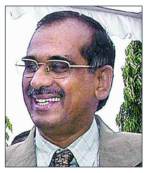

+91-98607-55000
Get an
Appointment
Nova Top Surgeons [X]



Dr. Sudhakar Williams
Sr. Consultant- Orthopedics
Specialty
Orthopedics
Clinical Focus and Expertise
Orthopedics- TKRs, THRs, Reconstructions
Career
-
Consultant Orthopaedics- Nova Specialty Hospitals- Jan 2014- Till date
-
Internship, Coimbatore Medical College, Coimbatore Feb 1983 - Feb 84
-
Senior House Officer, Christian College & Hospital, Vellore Feb 1984 - Feb 1985
-
Registrar, Christian College & Hospital, Vellore March 1985 - Feb 1987
-
Registrar, MN Orthopedic Hospital, Chennai June 1987 - June 1989
-
Senior House Officer, Princess Margaret Hospital, Swindon, England Aug 1989 - June 1990
-
Senior House Officer, Broadgreen Hospital, Liverpool, England July 1990 - Dec 1991
-
Designated Registrar, Aintree Trust Hospitals, Liverpool, England Jan 1992 - Dec 1992
-
Research Registrar, Knee Unit Holly House hospital, London, England Jan 1993 - June 1994
-
Consultant Orthopedic Surgeon, Pallava Hospital, Chennai
-
Consultant Orthopedic Surgeon, Sundaram Medical Foundation, Chennai
-
Consultant Orthopedic Surgeon, J. V. Hospitals, Chennai
-
Consultant Orthopedic Surgeon, Hariharan Hospitals, Chennai
-
Consultant Orthopedic Surgeon, G. M. Ortho Care, Chennai
-
Independent Private Practice since 1994
Faculty Experience
-
Assistant Prof. Orthopedics, Sri Ramachandra Medical College, Chennai Sept 1994 - Sept 1995
Education
-
MBBS, Coimbatore Medical College & Hospital, Coimbatore 1976-82
-
D.Orth, Christian Medical College & Hospital, Vellore 1985-87
-
Dip. NB Orth, National Board of Examinations, Delhi 1988
-
MCh Orth, University of Liverpool, England 1992
Fellowships and Certifications
-
Prosthetics and Orthotics Course conducted by Indian Association of Physical Medicine and Rehabilitation Tamil Nadu Chapter 8-9 Jan 1988
-
Basic AO Course organized by AO International, Switzerland at New Delhi 20-23 Aug 1988
-
Radiation Protection Course organized by Institute of Physical Sciences in Medicine, Swindon, England 29th March 1990
-
Harvard Course in Musculoskeletal Pathology, Liverpool Jan 1992
-
Knee Replacement Workshop, London 1994
-
Total Hip Workshop, SRMC & RI May 1995
-
Arthroscopy Workshop, Chennai June 1996
-
Knee Workshop, Allahabad July 1996
-
Arthroscopy Workshop, Bone & Joint Clinic, Chennai Sept 1997
-
Orthofix External fixator course, Madurai Feb 1998
-
Shoulder Workshop Bone & Joint Clinic, Chennai Sept 1998
-
Arthroscopy Update, Chennai Oct 1999
-
Trauma Update, Bone & Joint Clinic, Chennai Feb 2000
Conferences and Seminars Attended
-
Freeman Samuelson Knee Replacement Course, London 1993
-
Complications in Orthopedic Surgery, Sri Ramachandra Hospital and Research Institute, Chennai 1994
-
Second National and First International Symposium on Trauma, Anesthesia & Critical Care, Chennai 1995
-
AO Basic Course, Madras Medical College, Chennai 1995, 2000
-
Controversies in Orthopedics, MGR Medical University, Chennai 2000
-
Annual Conference, Tamil Nadu Orthopedic Association, Tirunelveli 19th Feb 1987
-
5th Annual Conference, Tamil Nadu Association of Trauma Care, Chennai Dec 1987
-
6th Annual Conference, Tamil Nadu Association of Trauma Care, Annamalai Nagar Sept 1988
-
20th Annual Conference, Tamil Nadu Orthopedic Association, Trichy Feb 1989
-
Tamil Nadu Orthopedic Association Meet, Chennai Feb 1995
-
Third National Conference on Critical Care, Chennai Jan 1997
-
Pediatric Orthopedic Society Conference, Mumbai 2000
-
International Symposium of the Royal College of Physicians and Surgeons of Glasgow, Chennai Nov 1998
-
British Hand Society Symposium, Spring Meeting, Bristol April 1991
-
British Orthopedic Research Society, Spring Meeting, Nottingham April 1992
-
British Orthopedic Association, Spring Meeting, London April 1994
Awards and Recognition
-
1st Rank, Pre-University with Triple Distinction (Biology, Chemistry and Physics), New College
-
Prof AJ Selvapandian Gold Medal for Best Outgoing Post Graduate Diploma Candidate @ Christian Medical College & Hospital Vellore1987
-
Prof M Natarajan Gold Medal, Paper in Traumatology at Tamil Nadu Orthopedic Association Conference, Tirunelveli 1987
-
National Award of Excellence IOACON 2003
-
Distinguished Orthopedic Surgeon, Dr. MGR Medical University 2012
-
Adjunct Professor, Dr. MGR Medical University 2012
Research and Publications
Presentations
-
Ligamentotaxis in the treatment of unstable distal radial fractures. 19th Annual Conference, Tamil Nadu Orthopedic Association, Tirunelveli 1987
-
Dynamic Hip Screw in the management of compound tibial fractures, Annual Conference, Tamil Nadu Association of Trauma Care, 6th Annamalai Nagar 1988
-
The external fixature system in the management of compound tibial fractures, 6th Care, Annamalai Nagar 1988 Annual Conference, Tamil Nadu Association of Trauma
-
Bipolar Arthroplasty for femoral neck fractures, 1st Symposium of the Chennai 1998
-
Diagnostic Arthroscopy of the Knee Joint, 20th Nadu Orthopedic Association, Trichy 1989
-
Finger Osteotomy - A review of 20 cases. South East Thames Orthopedic Training Circuit Meeting, Swindon, Wiltshire, England 1990
-
Silastic Interposition Arthroplasty for trapeziometacarpal arthrosis - Long Term Review, British Hand Society Symposium, Spring Meeting, Bristol, England 1991
-
Volume measurement of the subcutaneous plane of the forearm to determine the feasibility of Fasicotomy through limited dermotomy, British Orthopedic Research Society, Spring Meeting, Nottingham 1992
-
The uncemented patellar component of the Freeman Samuelson Total Knee replacement, British Orthopedic Association, Spring Meeting, London 1994
Publications
-
2 Cases of benign Oesophago-Bronchial Fistula. Indian Journal of Thoracic and Cardiovascular Surgery 1985 Vol 4 79-81
-
Meniscal Nodule - a case report. Knee Surgery, Sports Traumatology, Arthroscopy Vol 1, 1993
-
A drill guide for arthroscopic drilling of osteochondral lesions of the knee. The Knee Vol 1, 1994
-
Limb Salvage surgery for pathological fractures International Orthopedics. SICOT 2000 (24:170-172)
-
Limb Salvage surgery in distal tibial osteosarcoma using a custom mega prosthesis. International Orthopedics. SICOT 2000 (24:282-284)
Other Research Work
-
Study of Trans cutaneous nerve stimulation as a mode of treatment for painful conditions in orthopedics - A review of 2240 cases. Prof. M. V. Daniel Dr. Sudhakar Williams Department of Orthopedic Surgery, Christian Medical College, Vellore
-
A review of treatment of Sub-trochanteric Fractures Dr. George Abraham, Dr. Sudhakar Williams, Dr. Samuel Chittaranjan Department of Orthopedic Surgery, Christian Medical College, Vellore Presented at 19th Association,Tirunelveli Feb 1987 Annual Conference, Tamil Nadu Orthopedic
-
Management of Intra Capsular Fracture Neck of Femur using Biarticular Hip Prosthesis Dr. K. Selvam, Prof M. Natarajam, Dr. N. Mayilvahanan, Dr. Sudhakar Williams, MN Orthopedic Hospital, Chennai Presented at 5th Trauma Care, Chennai Dec 1987 Annual Conference, Tamil Nadu Association of
-
Diagnostic Arthroscopy of the Knee Joint Prof M. Natarajam, Dr. N. Mayilvahanan, Dr. Sudhakar Williams MN Orthopedic Hospital, Chennai Published in Bulletin of Tamil Nadu Orthopedic Association Feb 1989
-
Published in Bulletin of Tamil Nadu Orthopedic Association Feb 1989 Arm Wrestler's Fracture Prof M. Natarajam, Dr. N. Mayilvahanan, Dr. Sudhakar Williams MN Orthopedic Hospital, Chennai Presented at Asian Congress of Orthopedic Surgeons Feb 1998
-
Volume of the Forearm and Leg compartments, in relation to compartment syndromes, Thesis submitted for MCh Orth 1992
-
Customized Database Program Development. Developed Knee Indexing for Holly House Knee Unit, London, England. Developed Personal Log Book. Developed Research Program for Madras Bone Tumor Service